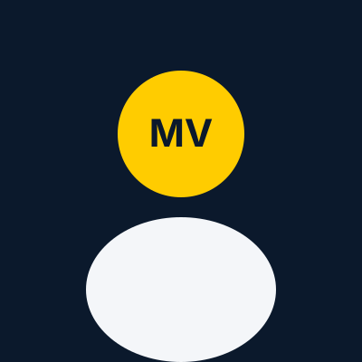
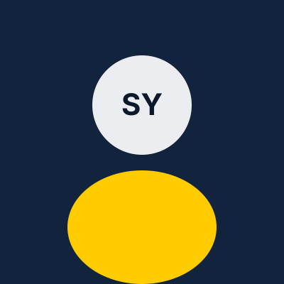
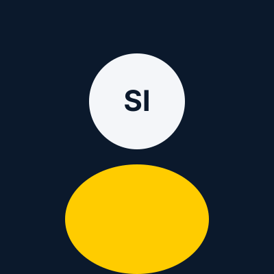
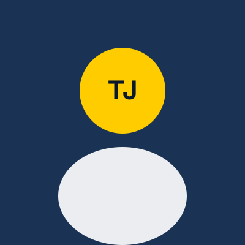
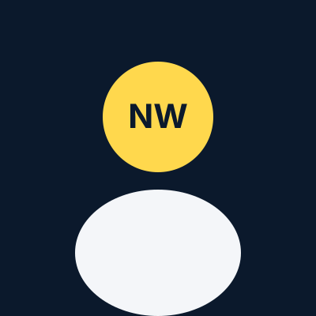
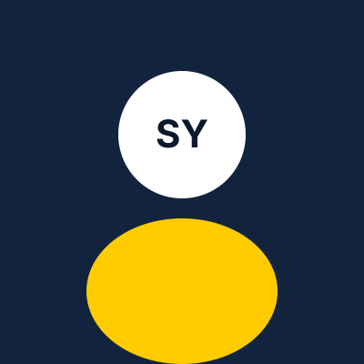
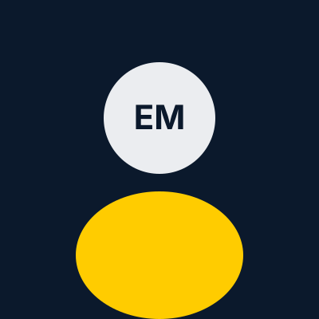

Maya de Vries
Managing Partner
BedrijfskundeMaya verbindt visie aan besluitvorming. Ze helpt directies keuzes scherp te maken en de organisatie daarop in te richten.
Over ons
MSN Consultancy is ontstaan vanuit de overtuiging dat organisaties beter groeien wanneer strategie, financiën, processen en technologie elkaar versterken.
Ontstaan & missie
MSN Consultancy is opgericht om bestuurders en ondernemers een sparringpartner te bieden die zowel de grote lijn als de operatie begrijpt. We zagen te vaak advies dat bleef steken in rapporten. Daarom werken we compact, dicht op de praktijk en altijd met een helder doel.
Onze missie is organisaties scherper te laten sturen: op koers, op samenwerking en op resultaat. We brengen uiteenlopende achtergronden samen — van bedrijfskunde tot finance, van gezondheidstechnologie tot business IT — zodat vraagstukken vanuit meerdere hoeken worden belicht.
Team
Elke consultant brengt een eigen vakgebied mee. Samen vormen we een team dat organisaties van strategie tot uitvoering kan begeleiden.

Managing Partner
BedrijfskundeMaya verbindt visie aan besluitvorming. Ze helpt directies keuzes scherp te maken en de organisatie daarop in te richten.

Senior Consultant Strategie
BedrijfskundeNoah vertaalt markt- en groeivraagstukken naar een koers die bestuurbaar is en door teams kan worden uitgevoerd.

Consultant Organisatie
BedrijfskundeSara werkt aan samenwerking, rollen en veranderkracht. Ze maakt organisatieontwikkeling concreet en houdbaar.

Consultant Proces & Groei
BedrijfskundeTim legt knelpunten bloot in de operatie en ontwerpt processen die sneller, rustiger en beter stuurbaar zijn.

Consultant Gezondheidstechnologie
GezondheidstechnologieLina brengt technologische en zorginhoudelijke kennis samen. Ze helpt organisaties innovatie vertalen naar werkbare toepassingen.

Consultant Finance & Control
Finance & ControlRuben maakt rendement, risico en stuurinformatie inzichtelijk, zodat investeringen en keuzes financieel onderbouwd zijn.

Consultant Business IT & Management
Business IT & ManagementEva verbindt IT-keuzes aan bedrijfsdoelen. Ze zorgt dat digitalisering de operatie versterkt in plaats van extra complexiteit toevoegt.